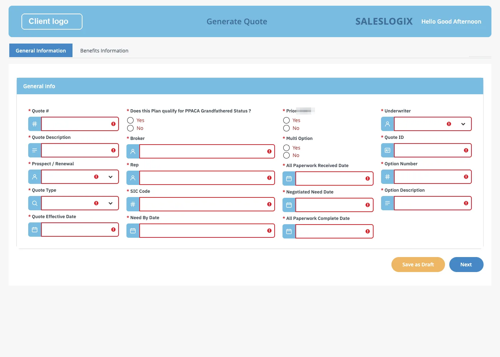
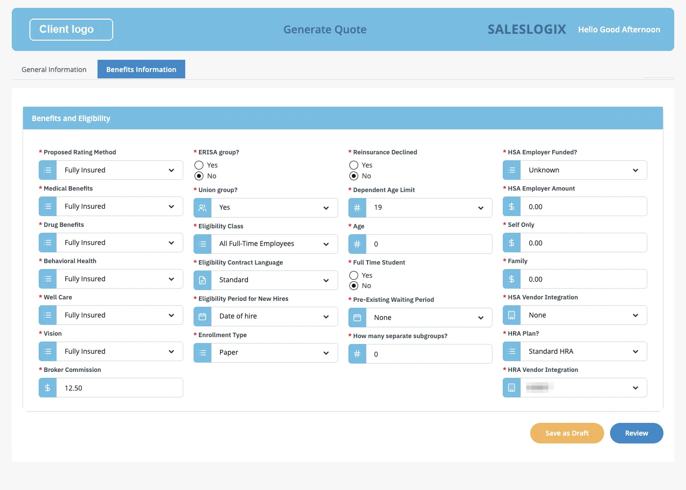

IBM Bob × BAW Dev Tools MCP · demo script
Bob builds the app one heading at a time. You reply.
What the client sees. IBM Bob reads the client's Word document and builds the BAW app one heading at a time. After each heading, Bob shows what it made and waits.
What you do. Paste one prompt. Reply to Bob at each of the eight steps. Then show the finished app in BAW.
- 1
- prompt
- 8
- steps, one per heading
- 0
- developer edits in BAW
Status: the app was checked on the test server. The import offers (steps 3, 5 and 6) and the tab change (step 7) are not rehearsed with Bob yet. After the next rehearsal, fix any wording that does not match what Bob shows.




One page the whole demo
Your replies, step by step.
Bob does one step, shows it, and waits. You check it and send the reply in the last column. At the steps marked BAW, Bob also puts what it has built so far into BAW, as a new snapshot.
| Step | Bob shows | You reply |
|---|---|---|
| Start | Paste the prompt. | |
| 1. Process | The process and its two tasks | “Looks good, go on.” |
| 2. General Information Business Object | GenInfoBO, 19 fields | “Looks good, go on.” |
| 3. General Information Coach View BAW 1.0.0 | The General Information screen | “Looks good. Yes, import it, and use the built-in template.” Then: “Go on.” |
| 4. Benefits Business Object | BenefitsBO, 26 fields | “Looks good, go on.” |
| 5. Benefits Coach View BAW 1.0.1 | The Benefits screen | “Looks good. Yes, import it.” Then: “Go on.” |
| 6. Client-Side Human Service BAW 1.0.2 | The form with two tabs, and Review Quote | “Looks good. Yes, import it.” Then: “Go on.” |
| 7. UI Validations BAW 1.0.3 | The required-field rules | Ask for the change (see step 7). Then: “Yes, build it and test it.” Then: “Go on.” |
| 8. Validate the workflow | Its own test of the whole workflow | Nothing. Bob reports. |
| BAW | Show the app in Designer, and run it in Workplace. |
Before thirty minutes before
Before you start.
- Restart Bob IDE, and check that the
baw-dev-toolsserver is connected. - Check the acronym. The prompt uses
ZZLGF. If an app with that acronym is already on the server, pick another one that starts with ZZ and change it in the prompt. - Put the client's files in
screenshots/Quote/: the Word document, the screenshots and the logo. This folder is not in the repository. - Check the ABW toolkit. It must be installed on the server, with its
.twxinwork/. If it is missing, Bob installs it, which adds a few minutes. - Open Workflow Center and Workplace in two browser tabs, signed in.
Start the prompt
Paste one prompt.
Say
- “The client gave us a Word document with eight headings and screenshots of two screens. Bob will turn it into a BAW app, one heading at a time.”
Bob shows A to-do list with the eight headings of the document.
Say
- “The lines at the bottom are all we added to the document. Bob made its plan from the document's headings.”
Build the BAW app described in `screenshots/Quote/Customer workflow requirement/IBM_Bob_BAW_Workflow_Requirements (1).docx`. Use the acronym ZZLGF.
The General Information UI screenshot is `screenshots/Quote/generate-quote.png`. The Benefits and Eligibility UI screenshot is `screenshots/Quote/image (1).png` to `image (3).png` (one screen, scrolled). Use `screenshots/Quote/<client logo>.png` as the logo.
Build it step by step: make a to-do list with one item per heading of the document, do one item at a time, and check with me at the end of each item before you go on.
In addition to the document:
- The screenshots show the look and the control style only. Build only the fields the document lists, with the document's data types.
- Every field in the document is required.
- Each tab has a Save as Draft button. Each tab has a Next button; the last tab's button is Review, which goes on to Review Quote.
- Review Quote shows both views read-only, with an Edit button on each section, and the final Submit.
- There is no approve or send-back step.Steps 1–8 one heading at a time
The eight steps.
Bob puts it into BAW You ask for a change
-
1 Process
Bob shows The process Large Group Fully Insured Sales: Start → Generate Quote → Review Quote → End.
You reply “Looks good, go on.”
-
2 General Information Business Object
Bob shows GenInfoBO and a table of its 19 fields, all required.
You reply “Looks good, go on.”
Say
- “These are the document's fields and types. Bob did not invent any.”
-
3 General Information Coach View BAW 1.0.0
Bob shows The QuoteDetails CV screen: its sections, columns and controls, taken from the screenshot. Bob asks whether to import it into BAW.
You reply “Looks good. Yes, import it, and use the built-in template.”
Bob Builds snapshot 1.0.0, installs it, opens the screen in a browser and shows you the picture.
You reply “Go on.”
Say
- “That is the first time anything went to BAW, and Bob asked first. The process is in BAW now too.”
-
4 Benefits Business Object
Bob shows BenefitsBO and a table of its 26 fields, all required.
You reply “Looks good, go on.”
-
5 Benefits Coach View BAW 1.0.1
Bob shows The BenefitsDetails CV screen: four columns, with a $ icon on the money fields.
You reply “Looks good. Yes, import it.”
Bob Builds snapshot 1.0.1, installs it, and shows you the screen in a browser.
You reply “Go on.”
-
6 Client-Side Human Service BAW 1.0.2
Bob shows The Generate Quote form: tab 1 General Information, tab 2 Benefits Information, with Save as Draft, Next and Review. And the Review Quote task: read-only, an Edit button on each section, and Submit.
You reply “Looks good. Yes, import it.”
Bob Builds snapshot 1.0.2, installs it, and shows you the form in a browser.
You reply “Go on.”
Say
- “Each import is a new snapshot, so we can see every step in BAW.”
-
7 UI Validations: ask for a change BAW 1.0.3
Bob shows The rules: every field is required, and Review stays blocked while a field is empty.
You reply With a change, in plain words:
Paste in Bob One change: the user must fill in the General Information tab before going to Benefits Information. Neither Next nor the tab header may skip ahead.Bob shows The change, and asks whether to build it.
You reply “Yes, build it and test it.”
Bob Builds snapshot 1.0.3, installs it, and tests it in a browser. On the empty form, Next and the Benefits Information tab stay on General Information, and the empty fields turn red (image 01).
You reply “Go on.”
Say
- “We asked for a change in plain words. Bob changed the app, rebuilt it and tested it. Nobody opened Designer.”
-
8 Validate the workflow
Bob Runs the whole workflow in a browser: Generate Quote, then Review Quote, to the end. It also saves a draft and reopens it. Then it gives its report and the steps to try it in Workplace.
You reply Nothing.
Say
- “Bob tested the app itself before it said it was done. Now we look at it in BAW.”
BAW show it
Show the app in Designer, then run it in Workplace.
| Open | What to show |
|---|---|
| Snapshots | 1.0.0 to 1.0.3, one per import |
| Processes, Large Group Fully Insured Sales | Start → Generate Quote → Review Quote → End |
| Data, GenInfoBO and BenefitsBO | 19 and 26 fields |
| User Interface, QuoteDetails CV and BenefitsDetails CV | Each View is bound to its business object |
| User Interface, Generate Quote | Two tabs, the variables, and the data mapping |
Say
- “These are normal BAW artifacts. Your developers can open and change every one of them.”
Click Start workflow and pick Large Group Fully Insured Sales.
- Press Next on the empty form. It stays, and the empty fields turn red (image 01). Click the Benefits Information tab: it does not open either.
- Fill in all of General Information and press Next. Benefits Information opens.
- Fill in part of Benefits and press Save as Draft.
- Open the task again from the task list. Your values and the tab come back (image 02).
- Fill in the rest (image 03) and press Review. The window closes.
- Open Review Quote from the task list (image 04). Press Edit on Benefits, clear a field, and press Submit: it refuses.
- Fill the field again and press Submit. The workflow is done.
Say
- “You cannot skip a required field, but you can always save a draft and come back.”
End close
What Bob made, and what to do if it breaks.
What Bob made. Every artifact the document asks for: the process with both tasks, GenInfoBO and BenefitsBO, the two Views, the Generate Quote form with Save as Draft, Review Quote, the validations and your tab change. Bob also tested the workflow.
Say
- “Bob made every artifact in the document. No developer work in BAW was needed.”
Still open. The dropdown options are placeholders until the client sends the real lists.
If someone asks
- “Union group?” is text, because the document says String, even though the screenshot shows a checkbox.
- In a reopened draft, Yes/No and number fields nobody touched show No and 0.
- Bob's layout can differ a little between runs. The names, fields, flow and behaviour stay the same.
| Problem | What to do |
|---|---|
| Bob goes on without stopping | Say: “Stop. Check with me after each item.” If it keeps going, restart Bob IDE. |
| Bob does not offer the import at step 3, 5 or 6 | Say: “Build it and import it into BAW so I can check it there.” |
| Bob says it cannot keep the user on the first tab | Restart Bob IDE, so it loads the current skill. |
| A Bob tool fails | Read the error (an HTTP code or “Cannot reach BAW”), fix it, and ask Bob to continue. |
| Bob refuses to repeat a call after three failures | Start a new Bob task. |
| Workplace shows “Authorization Error” | Sign out and in again, then open the task from the task list. |
checks passed